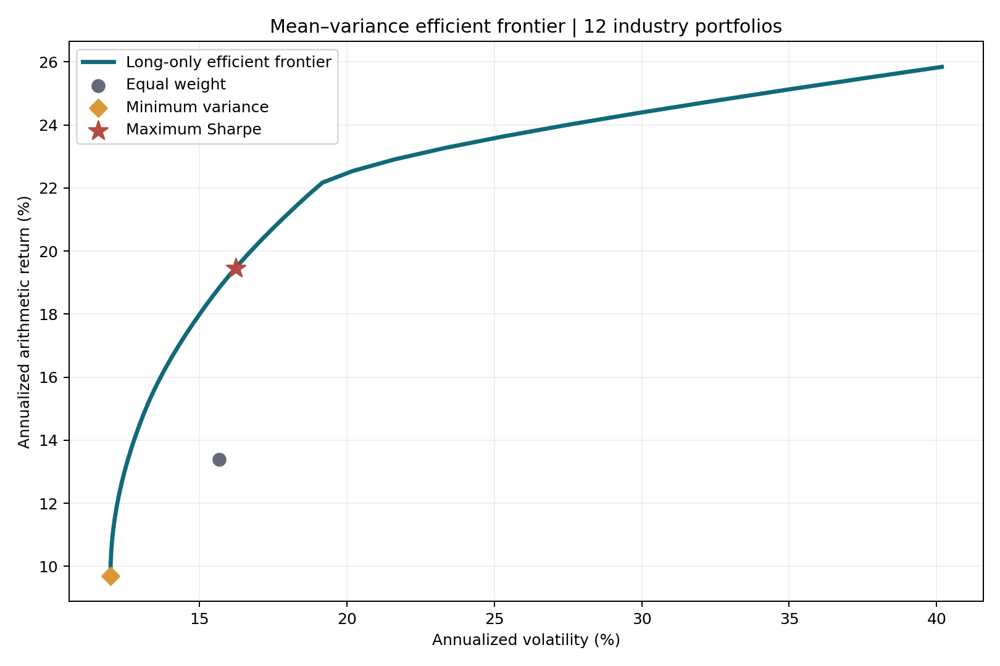

Python & analysis
Return calculations, numerical optimization, model testing, reusable scripts, and reproducible charts.
Hi, I’m Your Name. I explore how financial modeling, statistics, and clear communication can turn complex datasets into useful decisions.
I'm building this website as a way to showcase my growing knowledge, skills, and interests across different areas of finance. Each project is an opportunity to apply concepts I've learned through my coursework and independent exploration, develop practical skills, and gain a deeper understanding of topics that interest me.
My long-term career interests include corporate law, private wealth management, and investment banking. While these fields offer different career paths, each appeals to my interest in finance, business strategy, and analytical problem-solving. Through the projects I develop and share here, I hope to explore these areas further, strengthen my technical and analytical abilities, and better understand where my interests and career goals align.
My featured project examines portfolio risk and return across 12 U.S. industries and compares financial time-series forecasting methods. It reflects my interest in understanding financial markets through data analysis and applying quantitative tools to real-world financial questions
As I continue learning, I plan to expand this website with new projects that reflect my developing interests and capabilities.
Tools and concepts used in the portfolio analysis project, and areas I'm continuing to develop.
Return calculations, numerical optimization, model testing, reusable scripts, and reproducible charts.
Mean–variance optimization, covariance estimation, efficient frontiers, portfolio volatility, and Sharpe ratios.
Spreadsheet modeling, editable portfolio weights, risk calculations, and random walk versus AR(1) forecast evaluation.
A reproducible case study using historical industry return data and transparent model assumptions.
Analyzed monthly value-weighted returns for 12 U.S. industry portfolios (2016–2025), constructed a long-only efficient frontier, compared equal-weight, minimum-variance, and maximum-Sharpe portfolios, and evaluated random walk versus AR(1) holdout forecasts.

Historical-data-based model estimates, not a realized trading backtest or guaranteed future performance. Data: Kenneth R. French Data Library.
Each project begins with a topic I want to understand better. I try to approach each project with an emphasis on understanding the methods I use and being able to explain the decisions behind my work.
Before beginning the analysis, I spend time researching the topic, identifying relevant information, and determining what I want to investigate. I believe understanding the underlying concepts is just as important as knowing how to use the tools.
I use each project as an opportunity to apply what I've learned and develop new technical skills. This often involves working through unfamiliar methods, testing different approaches, and understanding why certain techniques produce different results.
Completing an analysis is only part of the process. I want to understand what the results actually indicate, where the limitations are, and what I would approach differently in future work. Each project provides an opportunity to improve both my technical abilities and my understanding of finance.
I'm interested in opportunities to apply analytical thinking and keep building strong, practical finance skills.